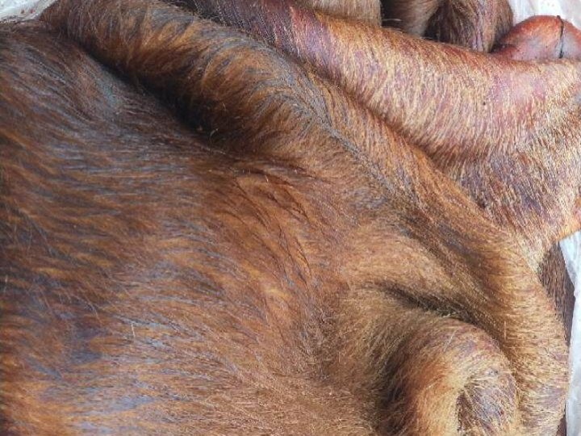
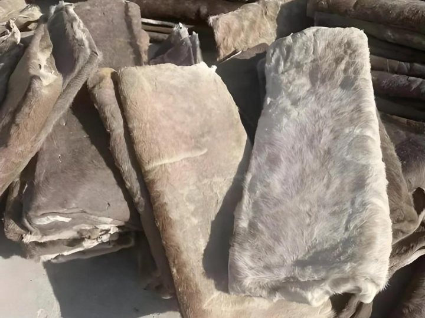
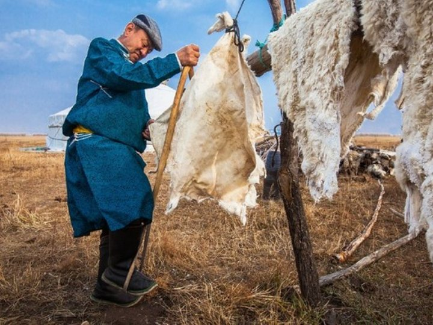
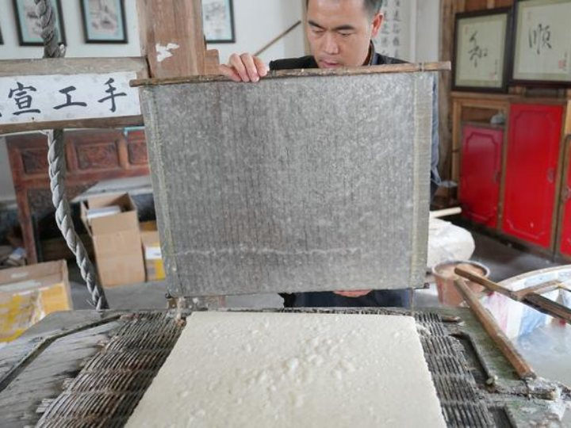
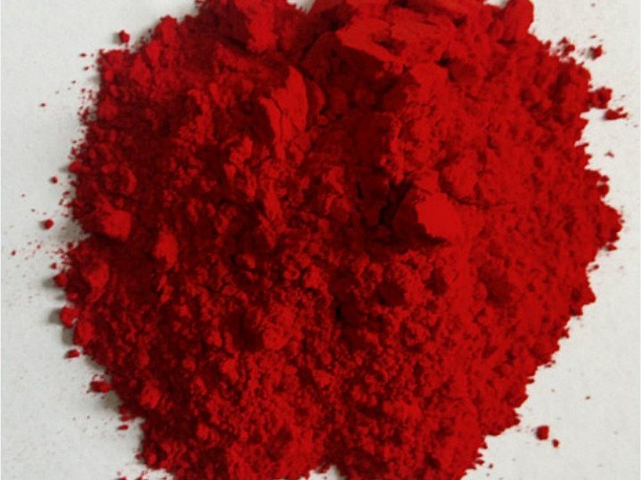
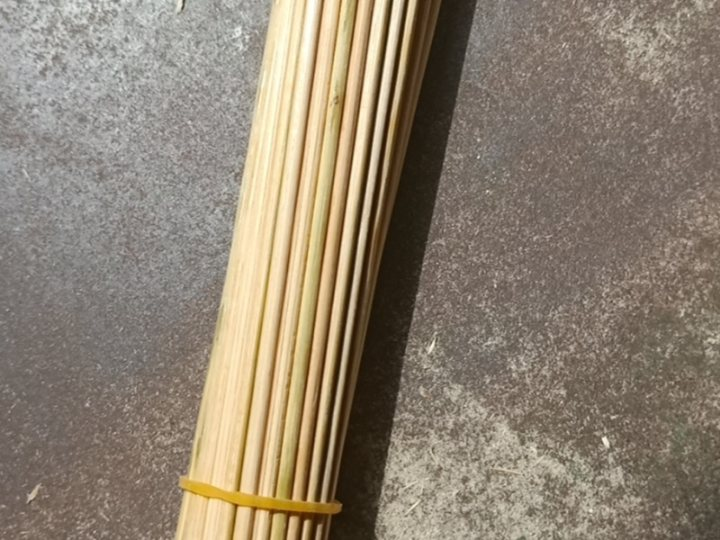
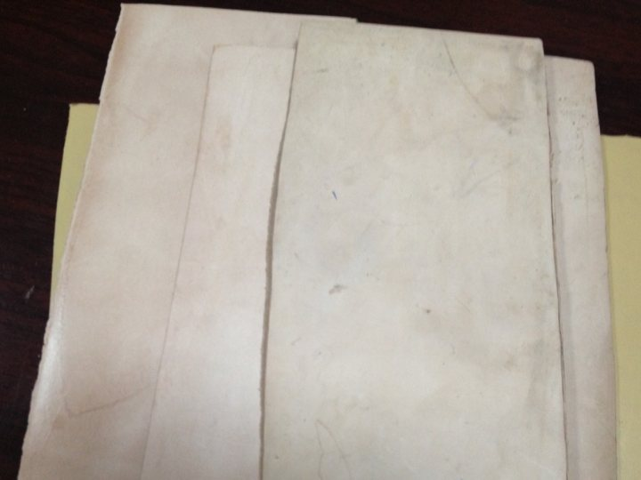
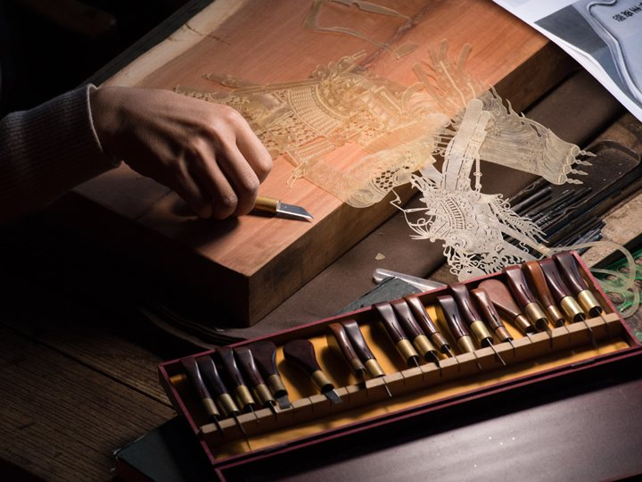

专题五 · 手上功夫
一张牛皮，三千刀
影人是刻出来的，不是画出来的。一张牛皮要泡、刮、绷、磨，薄到透光；描上稿子，一刀一刀镂空；敷完彩再熨平，最后缀成能动的身子，装上三根竹签。下面七道工序可以逐道看；再往下，用真实的工序与馆藏实物图，看影人怎么动、颜色怎么上、材料怎么选。
七道工序，一步不能省
点工序换内容各地工序名称不完全一样，但顺序大体相同：把皮弄薄、把稿描上、把空镂出来、把色敷上、把形定住、把件缀起、把签装上。其中最难的是镂刻，一件影人少的几百刀，多的三千刀。
工序描述参考中国美术学院民艺博物馆「皮影数字博物馆」制作工艺栏目与各地非遗项目说明。刻刀数、工时因流派与件头大小差异极大，文中数字为常见范围，不作精确统计。
十一处关节，三根签子
真实图 + 三签五签影人能动，靠的是关节处的线缀与竹签。一个整身影人拆开，是头茬、戳子（身子）、两臂、两手、两腿、两脚，缀连处十一处上下。签子通常三根：一根主签撑在胸口，两根手签接在手腕。下面是真实的工序照片与馆藏整身影人，看关节怎么接、签子怎么装。
签子数目因流派不同：海宁皮影常见五根，广东陆丰只两三根，云南腾冲多为一臂为主。三根是流传最广的一种。
五色，五种意思
真实头茬看五色影人的颜色不是随便配的。红忠、黑直、白奸、绿勇，这是从戏曲脸谱借来的规矩；皮子本身是半透明的土黄，透光就成了第六种颜色。下面是五色的含义，配馆藏真实头茬与敷彩现场，看颜色真的上到皮上是什么样子。
敷彩旧用「品色」（品红、品绿一类染料），兑桐油调开，薄涂多层，靠皮子透光显色。化学颜料普及后色更艳，但透光不如旧法温润。
九样材料，各有各的脾气
按用途分做一件影人，用得到的材料并不多，但每一样都有讲究。皮子决定寿命，刀决定精细，颜料决定透光，签子决定手感。

牛皮
影人身、头茬
厚薄均匀、透光好、耐折。北方多用黄牛皮，刮到半透明仍要留韧。
陕 · 甘 · 晋 · 豫
驴皮
影人身、头茬
比牛皮薄，透光更亮，刻细纹不易崩。滦州影系偏爱驴皮，俗称「驴皮影」。
冀东 · 辽西
羊皮
影人、头茬
薄而软，适合彩绘不重雕镂。海宁皮影用羊皮，重彩绘、少雕镂。
浙北
纸
纸影、纸窗影人
多层纸裱糊到一定厚度，刻起来比皮子省力。湖南长沙纸影人高可到六十厘米。
湘中桐油
罩面、调色
涂在皮面防水、提透光；兑入品色调成颜料，干后不脱。
各地
品色
敷彩
品红、品绿、品黄一类染料，色薄而透，多层叠加；矿物颜料遮盖强、透光差。
各地
竹签
主签、手签
取竹的青皮部分，直、轻、有弹性；粗细按影人重量配，太粗压手，太细打晃。
南方多竹处
牛皮线
缀结关节
从边角料上切下的细皮条，韧性好、不怕磨；也有用丝线的，转动更滑但易断。
各地
刻刀
镂刻
斜口、平口、圆口刀各一套，刃口要薄。艺人大多自己磨刀、自己做刀。
各地资料来源：中国美术学院民艺博物馆「皮影数字博物馆」制作工艺与材质栏目；中国非物质文化遗产网各地皮影戏项目说明；本馆藏品著录中的材质字段（牛皮 226 件、羊皮 20 件、驴皮 16 件、纸 13 件、影卷纸本墨书 21 件、麂皮 4 件）。材料图为公开网络图片（新闻与厂商实拍），仅作教学演示，如涉版权请告知即换。